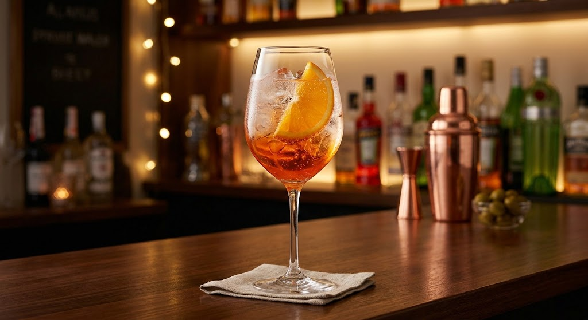
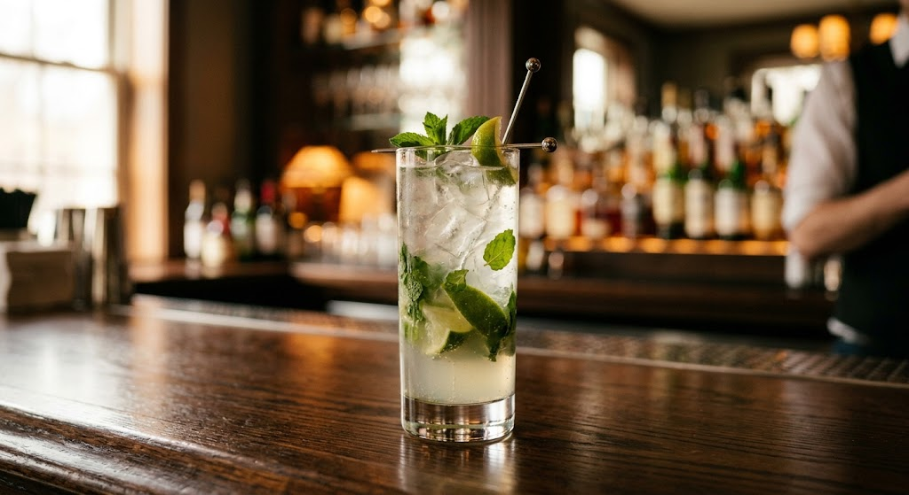
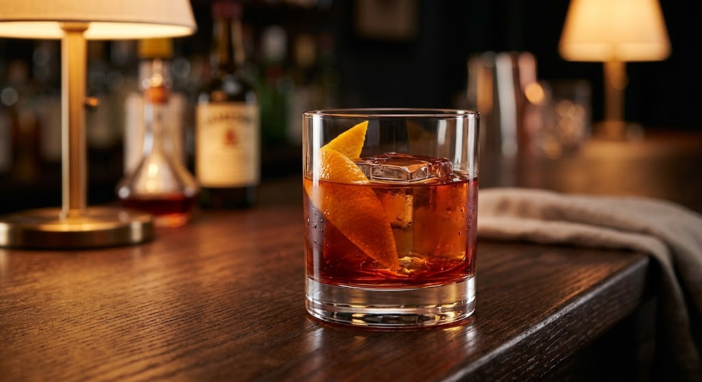
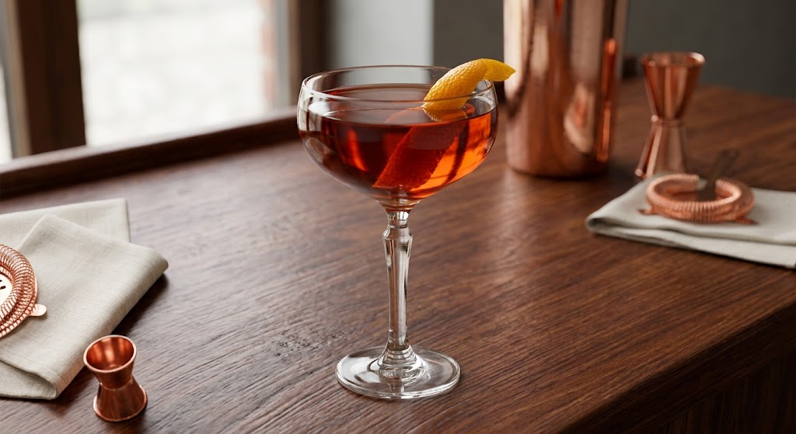
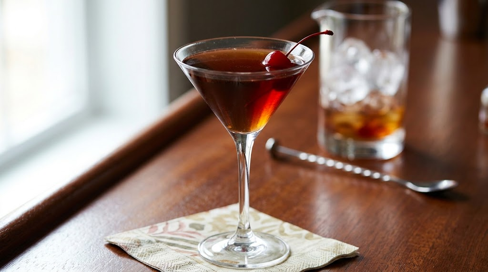

Refrescantes e Cítricos
Aperol Spritz
Ingredientes: Aperol, Espumante Brut, Áua com gás e Rodela de Laranja
Ingredients: Aperol, Brut Sparkling Wine, Sparkling Water and Orange Slice
Ingredientes: Aperol, Vino Espumoso, Agua con gas y Rodaja de Naranja

Gin Tônica
Ingredientes: Gin , Tônica e Limão Sicilaino
*opcional: pedir para adcionar Monin
Ingredientes: Gin, Tonic Water and Lemon sicilian
*optional: ask to add Monin Syrup
Ingredientes: Ginebra,Agua Tónica y Limón Amarillo
*opcional: pedir para añadir Monin

Mojito
Ingredientes: Rum, Hortelã , Limão Taiti ,Açúcar e Água com Gás
Ingredientes: White Rum, Mint, Lemon , Sugar and Sparkling Water
Ingredientes: Ron Blanco, Menta , Limón , Azúcar y Agua com Gas

Cássicos Robustos
Negroni
Ingredientes: Gin , Campari , Vermouth Tinto e Twist de Laranja
Ingredientes: Gin , Camapari , Red Vermouth and Orange Twist
Ingredientes: Ginebra, Campari , Vermut Rojo y Twiste de Naranja

Boulevardier
Ingredientes: Bourbon, Cmapari e Vermouth Tinto
Ingredientes: Bourbon , Campari and Red Vermouth
Ingredientes: Bourbon , Campari y Vermut Rojo

Manhattan
Ingredientes: Bourbon ,Vermouth Tinto e Angostura Bitters
Ingredientes: Bourbon, Red Vermouth and Angostura Bitters
Ingredientes: Bourbon , Vermut Rojo y Angostura Bitters

Clássicos e Suaves
White Russian
Ingredientes: Vodka , Licor de Café e Creme de Leite
Ingredientes: Vodka, Coffee Liqueur and Heavy Cream
Ingredientes: Vodka , Licor de Café y Crema de Leche

Kir Royale
Ingredientes: Licor de Cassis e Espumante Brut
Ingredientes: Crème de Cassis and Sparkling Wine
Ingredientes: Crema de Cassis y Vino Espumoso

Amaretto Sour
Ingredientes: Amaretto , Suco de Limão Siciliano e Xarope de Açúcar
Ingredientes: Amaretto , Lemon Juice and Simple Syrup
Ingredientes: Amaretto , Jugo de Limón Amarillo y Jarabe Simple

Sem Álcool
Espresso Tônica
Ingredientes: Espresso , Água Tônica e Rodela de Laranja
Ingredientes: Espresso Coffe , Tonic Water and Slice of Orange
Ingredientes: Shot de Espresso , Agua Tônica y Rodaja de Naranja

Soda Italiana
Ingredientes: Água com Gás , Limão espremido e Monin
*Consultar Sabores
Ingredientes: Sparkling Water , Lemon Juice and Monin
Syrup
*Check available flavors
Ingredientes: Agua con Gas, Jugo de Limon y Sirope
Monin
*Consultar Sabores disponibles